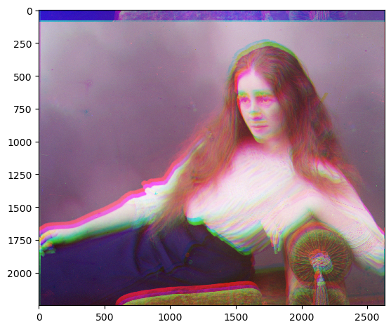
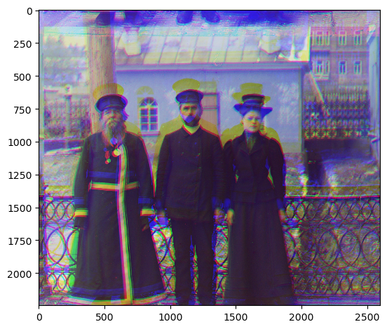

cathedral.jpg
Green Offset: (5, 2); Red Offset: (12, 3)

monastery.jpg
Green Offset: (-3, 2); Red Offset: (3, 2)
tobolsk.jpg
Green Offset: (3, 3); Red Offset: (6, 3)

Exhaustive search, [-15, 15] using L2 norm. Cropped by 15% each side.
cathedral.jpg
Green Offset: (5, 2); Red Offset: (12, 3)
monastery.jpg
Green Offset: (-3, 2); Red Offset: (3, 2)
tobolsk.jpg
Green Offset: (3, 3); Red Offset: (6, 3)
Halve on each level until 400x400. Go up and add the displacements.
church.tif
Green Offset: (87, 12); Red Offset: (157, -30)

emir.tif
Green Offset: (141, 83); Red Offset: (81, -84)

harvesters.tif
Green Offset: (161, 65); Red Offset: (225, 38)

icon.tif
Green Offset: (125, 65); Red Offset: (193, 85)
lady.tif
Green Offset: (145, 32); Red Offset: (217, -13)
 melons.tif
Green Offset: (185, 12); Red Offset: (225, 12)
onion_church.tif
Green Offset: (145, 95); Red Offset: (209, 121)

sculpture.tif
Green Offset: (109, -41); Red Offset: (225, -93)

self_portrait.tif
Green Offset: (185, 95); Red Offset: (225, 129)

three_generations.tif
Green Offset: (145, 55); Red Offset: (217, 40)
 train.tif
Green Offset: (129, 27); Red Offset: (193, 94)